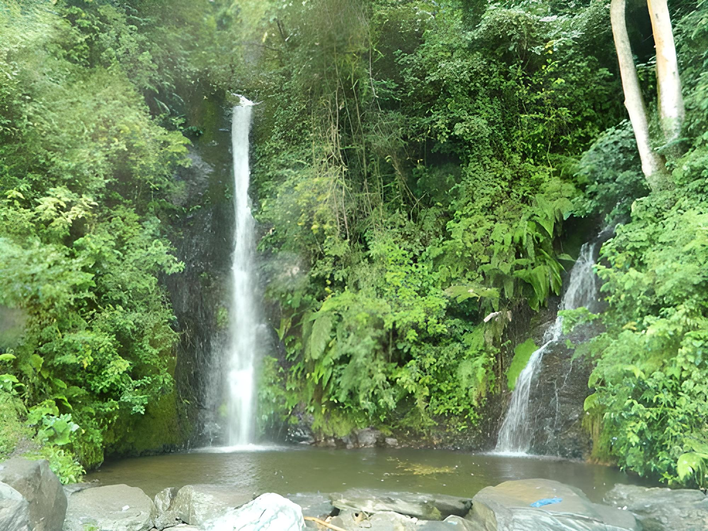
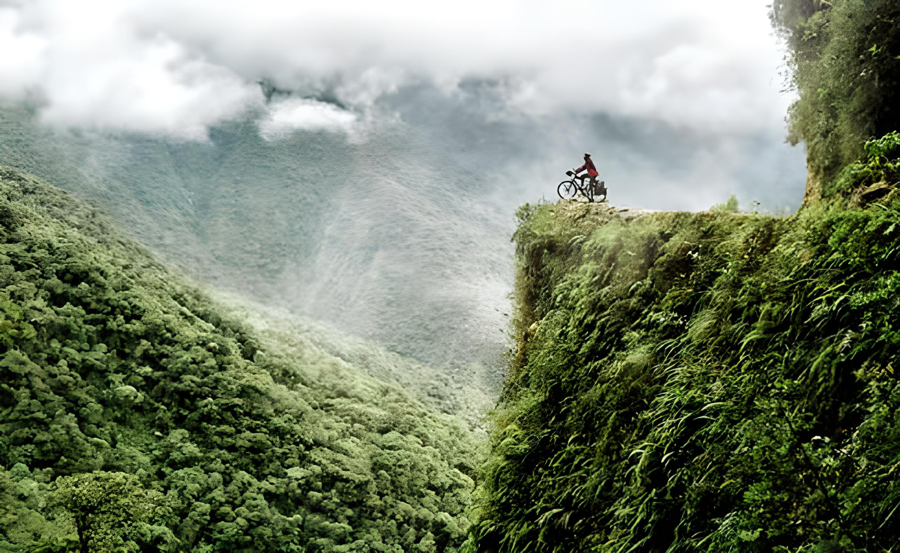

Coroico es un pintoresco pueblo situado en los exuberantes valles de los Yungas de Bolivia. Famoso por su clima agradable y su entorno natural, el área de Coroico ha sido habitada desde tiempos precolombinos por diversas culturas indígenas.
La región de Coroico ha desempeñado un papel importante en la historia boliviana, especialmente durante la época colonial y los conflictos independentistas.
Coroico ofrece a los visitantes una variedad de atractivos naturales y culturales. Entre los lugares de interés se encuentran las cascadas de Coroico, el Mirador del Valle con impresionantes vistas panorámicas, y el Parque Machia donde se pueden observar variedades de flora y fauna autóctonas.
Además, Coroico es conocido por sus festivales tradicionales, como la Fiesta de la Virgen de la Candelaria, que atrae a visitantes locales y extranjeros.
Coroico es un destino ideal para los amantes de la naturaleza y las actividades al aire libre. Los turistas pueden disfrutar de caminatas por los senderos naturales que rodean la zona, recorridos en bicicleta de montaña, y excursiones a las comunidades locales para conocer la cultura y la gastronomía yungueña.
El turismo sostenible es una prioridad en Coroico, con iniciativas que promueven la conservación del entorno natural y el desarrollo comunitario.